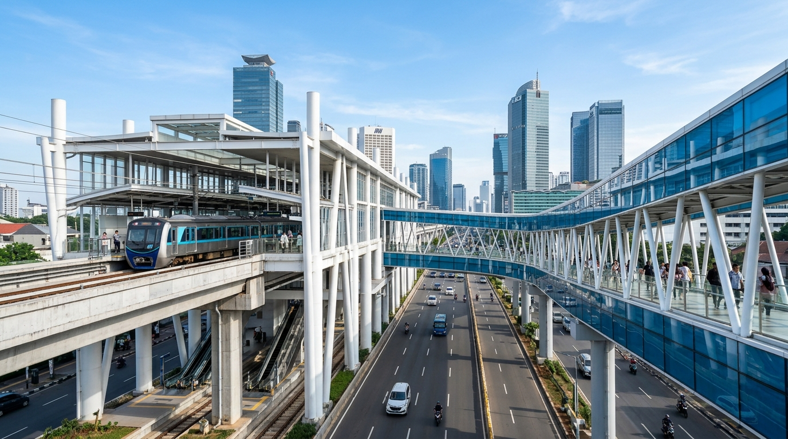

Pusat transparansi publik mandiri. Pantau alokasi, progres pembangunan kota, dan pastikan setiap kontribusi tercatat nyata.
Telusuri setiap rupiah pajak daerah yang dihimpun di 6 wilayah kota dan kabupaten administrasi DKI Jakarta. Data diolah secara transparan dari sistem penerimaan resmi Bapenda.
Catatan Transparansi Publik: Penerimaan pajak daerah adalah salah satu komponen Pendapatan Asli Daerah (PAD). Seluruh penerimaan bermuara ke Rekening Kas Umum Daerah (single pool fund) dan tidak pernah dikaitkan 1:1 secara langsung dengan program proyek tertentu.
Informasi belanja pada Bagian B disajikan sebagai konteks pemanfaatan APBD secara utuh oleh Pemerintah Provinsi DKI Jakarta untuk melayani warga, bukan untuk menyatakan bahwa pajak dari jenis tertentu membiayai proyek tertentu.
Pantau alokasi pagu anggaran dan realisasi serapan belanja per dinas teknis (SKPD/OPD). Belanja dicatat secara terpusat untuk program pembangunan dan pelayanan publik seluruh warga Jakarta.
Fasilitas publik yang dapat dilihat, digunakan, dan dirasakan langsung oleh masyarakat Jakarta. Dilengkapi data dinas pelaksana dan nilai anggaran pembangunan.
Arahkan kursor atau ketuk wilayah untuk melihat perolehan pajak yang terkumpul di masing-masing kota administrasi dan kabupaten.
Buat dan bagikan kartu fakta pajak daerah Jakarta dengan nama dan wilayah tempat tinggalmu. Didesain vertikal 3:4 khusus untuk status sosial media, diproses 100% di browser tanpa merekam privasimu.
Pajak daerah sering kali menggunakan istilah teknis perundang-undangan yang membingungkan. Berikut terjemahan resmi ke dalam bahasa warga awam berdasarkan UU HKPD dan Perda DKI Jakarta No. 1 Tahun 2024.